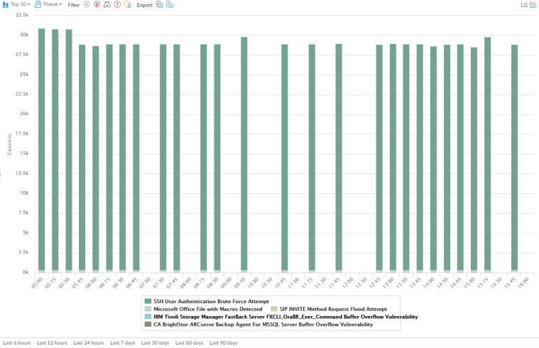

App Scope Threat Monitor Report The Threat Monitor report displays a count of the top threats over the selected time period. For example, the figure below shows the top 10 threat types for the past 6 hours. App Scope Threat Monitor Report  Each threat type is color-coded as indicated in the legend below the chart. This report contains the following options. Threat Monitor Report Options Description Top Bar Top 10 Determines the number of records with the highest measurement included in the chart. Threat Determines the type of item measured: Threat, Threat Category, Source, or Destination. Filter Applies a filter to display only the selected item. Determines whether the information is presented in a stacked column chart or a stacked area chart. Export Exports the graph as a .png image or as a PDF. Bottom Bar Specifies the period over which the measurements are taken. Parent topic Monitor > App Scope
